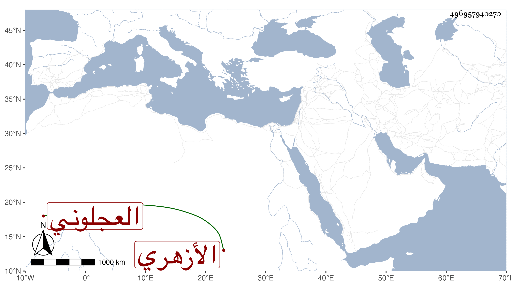

0902Sakhawi.DawLamic.ITO20230111-ara1.EIS1600.496957940270
Biography ID: 496957940270
938
سعد بن محمد بن جابر سعد الدين بن شمس الدين بن الزين العجلوني ثم الأزهري . كان خيرا دينا سليم الباطن يحفظ القرآن ويلازم الذكر والعبادة ولكثير من الناس فيه اعتقاد وتذكر عنه كرامات ، وكان العلاء البخاري يطريه جدا ، وما بلغني عنه في المعتقد إلا الخير وكانت بيده إمامة الطيبرسية المجاورة للأزهر . مات في شوال سنة تسع وثلاثين وقد قارب الثمانين . ذكره شيخنا في إنبائه إلا بعضه فنقلته من بعض أجزاء تذكرته
